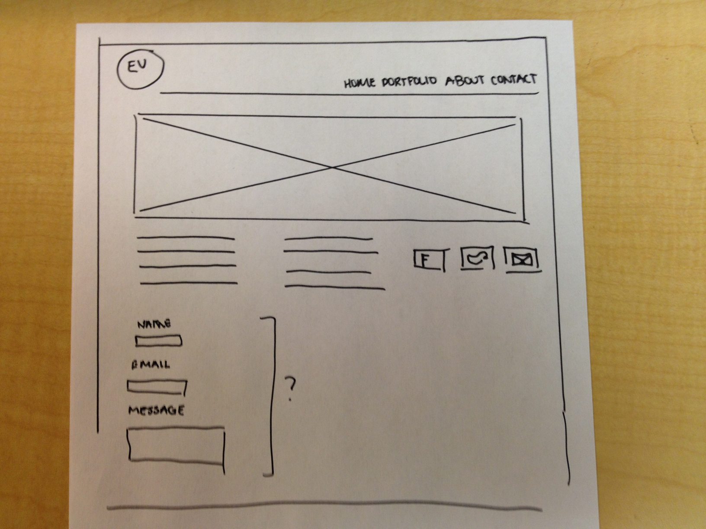

Finally, I want to keep my main logo/branding image and navigation consistant on every page, as well as overall design and color scheme.
For the contact page, I would want another, skinnier image that fits the theme to go along the top of the page. It would then simply list my basic contact information, and a link to download my personal resume. I would like there to be a basic widget type form where the viewer can type in their name, email, and message, and hit submit and it would automatically send to the email address that wil be listed on the page. I think it is a extra added usability step that makes getting in contact with me that much easier if for some reason they did not want to send a email another way.
Overall, I do not want this site to be overflowing with content! I want it to be just enough to show what I am capable of and give the viewer a basic intro to me. I think the overall design is just as important for a site such as this, especially as a graphic designer. I hope that through this project i can get a start on making this site exactly what I envision it to be.
